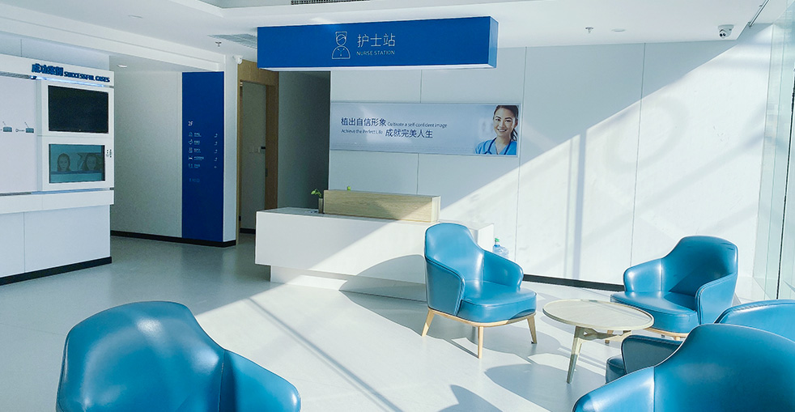

自然生髮效果，沒有人會發現您做過植髮

大麥微針植髮醫院的不剃髮植髮技術，是隱密植髮的頂級選擇。採用先進的微針技術，無須剃除取髮區或植髮區的任何頭髮，術後即可立即返回工作與日常生活，完全不會被人發現。非常適合職場人士、公眾人物，或任何重視隱私的求美者。
為何這項頂級療程是職場人士與注重隱私者的最佳選擇
了解不同的不剃髮植髮方式
隱密又便捷
舒適環境下的私密諮詢
個人化髮線設計，無須剃髮
微針萃取，無可見痕跡
不剃髮專用毛囊處理技術
穿過現有頭髮隱密植入
回歸日常，無人察覺
業界領航者，實績證明
自2006年起，微針植髮技術的先驅與領導者
遍布各大城市，統一高標準服務
創新微針與植髮筆技術，帶來卓越效果
全球患者信賴，締造改變人生的效果
港澳台患者全程母語溝通無障礙
頂尖醫療設備與嚴格安全規範，讓您安心療程
看看我們的患者蛻變成果


記錄與滿意患者的美好時刻

開心患者展示自然植髮效果

感激患者慶祝驚人的蛻變

自豪患者展現全新自然髮線

患者展示驚人的蛻變旅程

遠道而來的患者對成果讚不絕口

患者帶著全新自然頭髮開心微笑

滿意患者與醫療團隊合影

患者展示成功的植髮效果
聽聽全球滿意患者怎麼說
在Google搜尋不剃髮植髮推薦找到大麥！無剃髮FUE技術讓我不需要剃頭就能做植髮，隔週就回去上班，完全沒人發現！
隱密植髮評價超高！不剃髮植髮推薦給上班族的你！微創不剃髮技術讓我保持原有形象，效果自然！
無剃髮FUE太方便了！不剃髮植髮推薦！全程保留長髮，恢復超輕鬆，完全沒人知道我做了植髮！
在Bing查到隱密植髮評價和不剃髮植髮推薦！大麥的無剃髮FUE讓我全程保持專業形象，效果超讚！
不剃髮植髮推薦給不想被發現的你！隱密植髮評價很高，微創不剃髮讓我同事都沒發現，效果自然！
無剃髮FUE改變了我的生活！不剃髮植髮推薦！重拾自信還沒有人發現我做過植髮，隱密植髮評價超好！
體驗我們現代化且舒適的醫療空間

最先進的醫療設施

優質休息空間

無菌先進設備

私密專業空間

舒適術後空間

親切歡迎的入口
了解植髮常見疑問解答
立即聯絡我們，獲得免費諮詢
15810155700
+86 13730143529
hairtransplant@qq.com